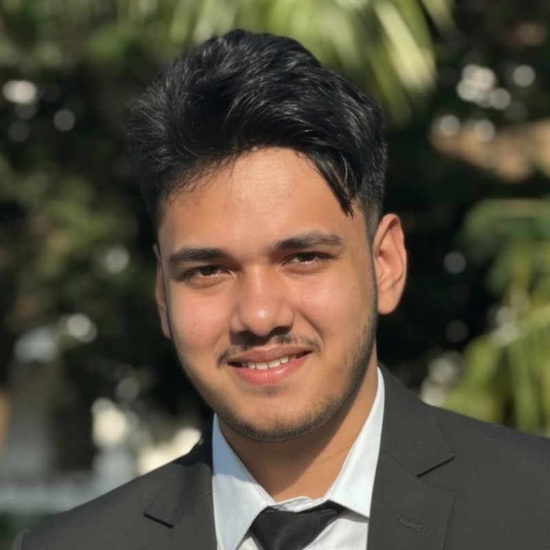

Human-robot interaction · MSc Robotics, Cranfield University
Pratyush
Pallav

I work on how people come to trust and understand a robot they work alongside, and how interface design shapes that trust.
Can this relationship be captured by a computational model precise enough to transfer into complex robot manipulation?
Open to funded PhD positions starting in 2027
The robot cell on this page replays my MSc welding-hoop task as you scroll, first with a gamepad, then in VR, then with the autonomy layer I want to build next. It finishes when you reach the end. Live traces are illustrative, and μ marks the study's condition means.
Now · October 2026
- Dec 2026
LUMA, a role-assigned three-arm servicer for cooperative-satellite on-orbit servicing, is accepted at IEEE ICRM 2026 in Kollam.
- In review
Four first-author papers, including the thesis paper at the International Journal of Social Robotics.
- 2027 start
Applying for funded PhD positions in human-robot interaction, shared autonomy and teleoperation.
Research
Questions
-
Q1
How do people form trust in a robot they work alongside, and how do they build an understanding of its behaviour?
In my MSc study, trust behaved as largely dispositional within a session, which makes how it forms and when it shifts the open question. -
Q2
How does interface design shape that trust, and which cues make a robot's intent legible enough to rely on?
I built a ghost robot, graded multimodal warnings and a live HUD. Perceived safety, not overall trust, registered an interface's safety cost. -
Q3
Can this relationship be captured by a computational model precise enough to transfer into complex robot manipulation?
Heart-rate variability tracked the interface when trust did not, which makes operator state a candidate input for a manipulation controller.
The MSc study in numbers
- operators
- 27
- interfaces, gamepad and VR
- 2
- metrics survived correction
- 9/16
- AUC, interface from physiology
- 0.87
Trust dynamics
Formation, erosion and recovery of trust across repeated interaction, and why it can stay put when risk changes.
Interface legibility
Visual, auditory and haptic cues that expose robot intent and near-future risk to the operator.
Shared autonomy
Arbitration between human input and autonomous control, informed by an estimate of operator state.
Manipulation transfer
Moving models of trust and operator state from teleoperation studies into contact-rich manipulation control.
Publications
Record
-
Trust Does Not Track Risk in Robot Teleoperation: An Empirical Dissociation and Its Computational Account
Pallav & Zhang · International Journal of Social Robotics (Springer Nature)
-
A Transparent Teleoperation Architecture with Multimodal Control and Alert System for Industrial Welding Tasks
Pallav & Zhang · IEEE Telepresence 2026, Bristol, 9–13 November 2026
-
Beacon-Grounded Trust Against Colluding Byzantine Swarms: A Sensing-Coverage Threshold for Resilience
Pallav · Advanced Robotics (TADR-2026-0691)
-
Trust and Engagement Aware Authority Allocation for Grid Frequency Control under False Data Injection
Pallav · IEEE ICPC2T 2027, NIT Raipur, 3–5 March 2027
-
LUMA: A Role-Assigned Three-Arm Servicer for Cooperative-Satellite On-Orbit Servicing
Pallav, Barbu, Kashif, Fernandez, Sharma, Gu, Felicetti, Tang & Upadhyay · IEEE ICRM 2026, Kollam, 17–19 December 2026
-
Towards a Context-Adaptive Trust Scale for Industrial Human-Robot Collaboration: Development and Initial Content Validation
Zhang, Burns, Pallav & Fletcher · ICRES 2026 (CLAWAR), Cranfield, oral presentation · Springer LNNS
-
Voice-Commanded Physical Assistance for Individuals with Mobility Impairments: A ROS 2-Based Framework Using the Kinova Gen3 Manipulator
Pallav & Mahato · Engineering Research Express (ERX-121430)
-
A portable AI-enabled red-reflex imaging system for detection of retinoblastoma in children and method thereof
Poddar, Banerjee, Pandey & Pallav · BIT Mesra (PAT199/130/24)
Earlier work in robotics and bioengineering (10)
Journal articles
- Optimizing the pick-and-place mechanism using MATLAB functionalities and Kinova Gen3. Pallav & Mahato (2025). Journal of Engineering Science and Technology, 18, 76–84.
- Online continuous monitoring of time-domain parameters of heart rate variability using MATLAB and implementation on human and rat ECG data. Pallav, Keshri, Aggarwal & Sinha (2025). Journal of Clinical Engineering, 50, 15–21.
- Coordinate-following robot using ArUco markers. Pallav (2024). International Journal of Instrumentation Science and Engineering, 14, 1–8.
- Neurocardiac effects of nicotine and caffeine in Wistar rats: an EEG-ECG study integrating inferential statistics and machine learning for applications in digital diagnostics. Pandey, Kumar, Pallav, Mehra & Sinha (2026). Indian Journal of Animal Research. doi:10.18805/IJAR.B-5827
Book chapters
- Vision-based controlled pick-and-place operation of a delta parallel robot. Pallav, Mahato, Kumar & Ghuku (2026). Machine Intelligence for Research and Innovations, MAiTRI 2025, LNNS, Springer.
- Optimizing MRI-based brain tumor classification: a study of model efficiency and accuracy. Pallav & Keshri (2026). Biomedical Engineering Science and Technology, CCIS 2635, 328–343, Springer.
Conference presentations
- Transformer-based detection of lung maladies and tuberculosis classification. Nahar & Pallav (2025). ICMMMI, NIT Jamshedpur.
- MRI-based brain tumor classification using transformers. Pallav & Nahar (2024). IndoML Symposium, BITS Goa, poster.
- Detection of tuberculosis using AI: a comparative CNN study. Pallav & Nahar (2024). ET2B, BIT Mesra.
Patent
- Variable inertia flywheel design to reduce speed fluctuations under variable loading in diesel engines. Mahato, Pallav & Ranjan. Filed at BIT Mesra.
Projects
Work
-
MSc thesis · Cranfield · 2025–2026
Improving Human Performance and Trust in Robot Teleoperation through Transparent Interface Design
Supervised by Dr Jingyi Zhang. Twenty-seven participants teleoperated a UR16e with a custom welding tool through an eight-hoop task, comparing an Xbox gamepad with VR control. VR was faster and smoother but cut the safety margin. Perceived safety and heart-rate variability registered that cost, while overall trust stayed comparatively stable.
Key results, gamepad against VR
Condition means from the MSc study, n = 27 Mean Gamepad VR Survived correction Trial time 132.7 s 53.9 s ● yes Velocity 12.1 mm/s 31.1 mm/s ● yes RMS jerk 2511 1293 ● yes Clearance 440 mm 279 mm ● yes HRV RMSSD 126 ms 90 ms ● yes Skin conductance 3.18 µS 3.12 µS ○ no Trust, total 5.75 5.42 ○ no Perceived safety 5.73 5.27 ● yes ● survived Benjamini–Hochberg correction across 16 primary metrics. Trust is on the 1 to 7 Context-Adaptive Trust Scale.
-
Industrial teleoperation · Under review
Transparent welding teleoperation
A teleoperation architecture for industrial welding that combines multimodal control with a graded alert system, so the operator can read the state of the robot and the risk ahead of it.
-
Space robotics · MSc group project · Accepted
LUMA, a three-arm on-orbit servicer
Robotic arm design for on-orbit servicing, refuelling and assembly. The resulting paper on a role-assigned three-arm servicer for cooperative satellites is accepted at IEEE ICRM 2026.
-
Planetary rover · CranSEDS · Mechanical lead
Olympus Rovers Trials
Led the mechanical design of Cranfield's rover, which was shortlisted in an Airbus-sponsored competition, with its Archimedes screw sampling mechanism noted as a particular highlight.
-
Assistive robotics · ROS 2
Voice-commanded physical assistance
A ROS 2 framework that lets people with mobility impairments command a Kinova Gen3 manipulator by voice, with a pick-and-place pipeline underneath.
-
Patent · Filed, BIT Mesra
Red-reflex imaging for retinoblastoma
A portable, AI-enabled imaging system for detecting retinoblastoma in children, developed with the Rajendra Institute of Medical Sciences during my research internship at the Bio-Photonics Lab.
Experience
Track record
Education
MSc Robotics
Cranfield University, United Kingdom
Modules included Human-Robot Interaction, Autonomy in Robotic Systems, Robotics Control and Machine Vision for Robotics.
BTech Mechanical Engineering
Birla Institute of Technology, Mesra, India
Thesis on optimising speech-based robotic manipulation for precision package handling.
Research positions
- Jul 2024 – Apr 2025
Undergraduate Researcher, Robotics and Automation Lab, BIT Mesra
Deployed a Kinova Gen3 7-DOF arm in a simulated industrial cell with RGB-based package identification, and improved the earlier system by at least 35% with ROS, URDF, RViz and Gazebo.
- May – Jul 2024
Research Intern, Bio-Photonics Lab, BIT Mesra
Graded retinoblastoma severity with the Rajendra Institute of Medical Sciences, built a real-time retinal analysis algorithm at 87% accuracy, and filed a patent on a portable ophthalmoscope.
- May 2023 – May 2024
Research Intern, Bio-Medical Lab, BIT Mesra
EOG and EEG control for stroke patients, transformer models for MRI brain tumour and tuberculosis classification, and an ArUco-marker coordinate system for robots.
Recognition and leadership
- 2024
Led the team, as President, to the finals of ISRO's rover development challenge, with a grant for further prototype development.
- 2024
Second prize for a drone demonstration at a Government of India exhibition, as the only non-PhD participant.
- 2023
Built Greet Bot, a service robot presented to senior Tata leadership at Tata TechEx.
- BIT Mesra
Revived Robolution, the official robotics club, after Covid as Vice President, and was a founding member and the first Vice-Chair of the ASME student section.
- Member
ASME, UKSEDS and The Robotics Society of India.
Contact
Let's talk about trust, interfaces and control.